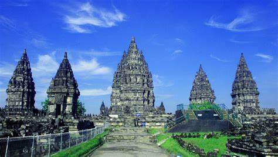
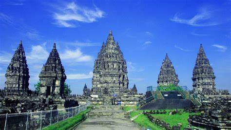

Candi Prambanan
Candi Prambanan atau Candi Roro Jonggrang (bahasa Jawa: ꦕꦤ꧀ꦝꦶꦥꦿꦩ꧀ꦧꦤꦤ꧀, translit. Candhi Prambanan) adalah kompleks candi Hindu terbesar di Indonesia yang dibangun pada abad ke-9 masehi. Candi ini dipersembahkan untuk Trimurti, tiga dewa utama Hindu yaitu Brahma sebagai dewa pencipta, Wisnu sebagai dewa pemelihara, dan Siwa sebagai dewa pemusnah. Berdasarkan prasasti Siwagrha nama asli kompleks candi ini adalah Siwagrha (bahasa Sanskerta yang bermakna 'Rumah Siwa'), dan memang di garbagriha (ruang utama) candi ini bersemayam arca Siwa Mahadewa setinggi tiga meter yang menujukkan bahwa di candi ini dewa Siwa lebih diutamakan.
Sejarah Candi Prambanan
Prambanan adalah candi Hindu terbesar dan termegah yang pernah dibangun di Jawa kuno, pembangunan candi Hindu kerajaan ini dimulai oleh Sri Maharaja Rakai Pikatan sebagai tandingan candi Buddha Borobudur dan juga candi Sewu yang terletak tak jauh dari Prambanan. Beberapa sejarawan lama menduga bahwa pembangunan candi agung Hindu ini untuk menandai kembali berkuasanya keluarga Sanjaya atas Jawa, hal ini terkait teori wangsa kembar berbeda keyakinan yang saling bersaing; yaitu wangsa Sanjaya penganut Hindu dan wangsa Sailendra penganut Buddha. Pastinya, dengan dibangunnya candi ini menandai bahwa Hinduisme aliran Saiwa kembali mendapat dukungan keluarga kerajaan, setelah sebelumnya wangsa Sailendra cenderung lebih mendukung Buddha aliran Mahayana. Hal ini menandai bahwa kerajaan Medang beralih fokus dukungan keagamaanya, dari Buddha Mahayana ke pemujaan terhadap Siwa.
Penduduk lokal warga Jawa di sekitar candi sudah mengetahui keberadaan candi ini. Akan tetapi mereka tidak tahu latar belakang sejarah sesungguhnya, siapakah raja dan kerajaan apa yang telah membangun monumen ini. Sebagai hasil imajinasi, rakyat setempat menciptakan dongeng lokal untuk menjelaskan asal-mula keberadaan candi-candi ini; diwarnai dengan kisah fantastis mengenai raja raksasa, ribuan candi yang dibangun oleh makhluk halus jin dan dedemit hanya dalam tempo satu malam, serta putri cantik yang dikutuk menjadi arca. Legenda mengenai candi Prambanan dikenal sebagai kisah Rara Jonggrang.
Apa Saja yang Bisa Kamu Dapatkan di Candi Prambanan?
Banyak sekali hal yang bisa kita dapatkan di lokasi wisata ini.
- Mempelajari seni sastra dan budaya
- Spot foto
- Berburu suvenir
- Mengenang sejarah

 
